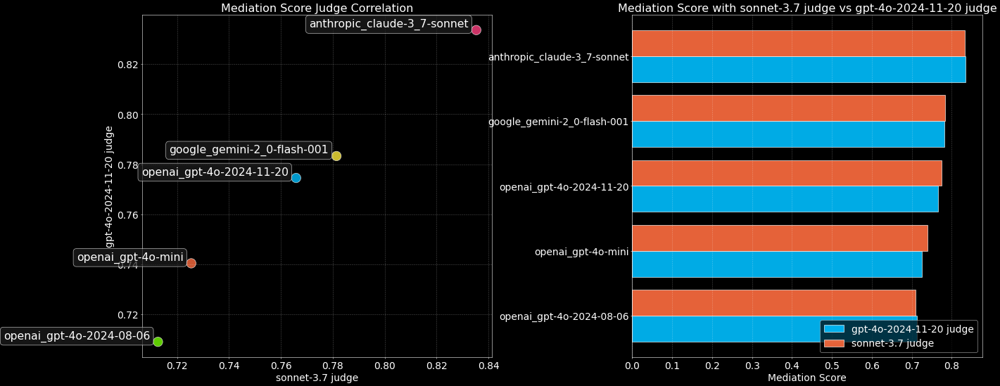

EQ-Bench
Emotional Intelligence Benchmark for LLMs
Github | Paper | | Twitter | Leaderboard
💙EQ-Bench3 | 🎨Creative Writing | ⚖️Judgemark v2 | 🎤BuzzBench | 💗EQ-Bench (Legacy)
📩How to Submit
At this time we only accept submissions of open weight models that are available to everyone via HuggingFace.
To submit, get in touch by email or twitter with:
- A link to your model on huggingface
- Optimal prompt format & generation config
- The EQ-Bench score that you got for your model
We will then verify the result on our end and add to the leaderboard. This project is self funded so please respect that we don't have unlimited compute!
💙EQ-Bench 3
EQ-Bench 3 is an Emotional Intelligence benchmark focused on active conflict mediation skills. It evaluates the ability of language models to navigate complex emotional territory in challenging and diverse scenarios.
The benchmark employs a set of conflict scenarios where the model must mediate between two or more parties with conflicting interests, emotional states, and communication patterns. Unlike the original EQ-Bench which assesses the ability to predict emotional states, EQ-Bench 3 targets active emotional intelligence abilities.
Methodology:
- Test Structure: The benchmark runs multi-turn conversations (up to 21 turns) between the test model (acting as conflict mediator) and actor models (playing clients or disputants). The actor model we use is gemini-2.0-flash-001. Each scenario includes detailed character profiles with specific emotional states and backgrounds.
- Assessment Criteria: We score models on:
- Basic emotional intelligence skills (recognizing emotions, showing empathy)
- Professional skills specific to therapy or mediation
- Avoiding serious professional mistakes
- How It Works: The benchmark uses three models:
- Test model: The AI being evaluated
- Actor model: Plays realistic clients or disputants
- Judge model: Claude-3.7-Sonnet scores the test model's performance
- Scoring: The final score combines:
- Scores across multiple skill areas
- A count of identified mis-steps and how serious they were
Beyond just scores, the judge provides a critical analysis of specific errors, rating them as minor, moderate, or serious. This helps identify exactly where and how models struggle in realistic professional conversations.
Judge Self-Bias
A common concern raised about LLM-judge evals is that the judge might be biased, particularly towards its own outputs. To understand this effect we benchmarked the top models with two judges: Sonnet-3.7 (the judge we use for the leaderboard), and gpt-4o-2024-11-20.
Here are the results from these two judge models rating the top models (including themselves) in the EQ-Bench3 task:
{kind=link}
While this is a limited comparison, we don't see any significant self-bias to be evident for these two judges. In fact, their scoring is nearly identical.
Code and full documentation will be available in the EQ-Bench repository soon.
💗EQ-Bench
EQ-Bench is a benchmark for language models designed to assess emotional intelligence.
Why emotional intelligence? One reason is that it represents a subset of abilities that are important for the user experience, and which isn't explicitly tested by other benchmarks. Another reason is that it's not trivial to improve scores by fine tuning for the benchmark, which makes it harder to "game" the leaderboard.
EQ-Bench is a little different from traditional psychometric tests. It uses a specific question format, in which the subject has to read a dialogue then rate the intensity of possible emotional responses of one of the characters. Every question is interpretative and assesses the ability to predict the magnitude of the 4 presented emotions. The test is graded without the need for a judge (so there is no length bias). It's cheap to run (only 171 questions), and produces results that correlate strongly with human preference (Arena ELO) and multi-domain benchmarks like MMLU.
You can run the benchmark on your own models or validate the leaderboard scores using the code in the github repo above.
If you would like to see a model on the leaderboard, get in touch and suggest it!
🧙MAGI-Hard
LLM Benchmarks are chasing a moving target and fast running out of headroom. They are struggling to effectively separate SOTA models from leaderboard optimisers. Can we salvage these old dinosaurs for scrap and make a better benchmark?
MAGI-Hard is a recently added metric to the leaderboard. It is a custom subset of MMLU and AGIEval, selected to have strong discriminatory power between top ability models.
Read more here.
You can use the MAGI test sets with this fork of EleutherAI lm-evaluation-harness.
🎨Creative Writing
This benchmark uses a LLM judge (Claude 3.5 Sonnet) to assess the creative writing abilities of the test models on a series of writing prompts.
You can reproduce these results or run the benchmark on your own models with the EQ-Bench repo on Github.
Update 2025-02-25: New metric -- Vocab Complexity
It's become apparent that the judge in this eval is easily impressed by vocab flexing. Some of the models tested use an inordinate amount of complex multisyllabic vocabulary, and it artificially inflates their score. As such we've introduced a new column for vocab complexity ("Vocab"), using a calculation of the proportion of words having 3+ syllables.
The "Vocab control" slider penalises overly complex vocab usage. It may seem counter-intuitive to penalise complex vocab, but in our experience, vocab-maxxing harms writing quality. Since this is quite a subjective aspect to the evaluation, we let the user set the penalty amount.
GPT-Slop
The "Slop" metric measures words that are typically over-used by LLMs (also known as GPT-isms). Higher values == more slop. It calculates a value representing how many words in the test model's output match words that are over-represented in typical language model writing. We compute the list of "gpt slop" words by counting the frequency of words in a large dataset of generated stories (Link to dataset).
Some additional phrases have been added to the slop list as compiled from similar lists around the internet.
The full list, as well as the code to generate the over-represented words, can be found here: https://github.com/sam-paech/antislop-sampler.
If you're interested in reducing gpt-isms, you can try the anti-slop sampler found in this repo. It downregulates the probability of the provided phrase list as the model inferences.
We've released v2 of the creative writing benchmark & leaderboard. The old version was starting to saturate (scores bunching at the top), so we removed some of the less discriminative prompts, switched judge models, and made some other improvements besides.
Version 2 Changes
- Default min_p = 0.1, temp = 1 for transformers & oobabooga inference
- Change to Claude 3.5 Sonnet as judge
- Removed some prompts and added new ones; 24 in total now.
- Reworked the scoring criteria
- Criteria now are weighted (to increase discriminative power)
- Leaderboard models are now tested for 10 iterations
- Leaderboard now shows error bars for 95% confidence interval
- Sample txt on leaderboard now show scores for all iterations, as well as inference settings
There has been a distinct lack of automated benchmarks for creative writing because, put simply, it's hard to assess writing quality without humans in the loop. Asking a language model, "How good is this writing (0-10)" elicits poor results. Even if we had a good LLM judge, it's not immediately obvious how to formalise the assessment of creative writing objectively.
The release of Claude 3, in particular the flagship Opus model, has solved half of this equation: it's able to give meaningful & nuanced analysis of creative writing output, and it can tell the difference between a wide range of ability levels.
To solve the other half of the equation, we've come up with an assessment format that works to the strengths of LLM judges and avoids their weaknesses. LLM judges are typically bad at scoring nebulous metrics like "How well written is this piece?" They also find it hard to give consistent scores on an objective rating system if they don't have some exemplar or baseline reference to compare to.
Our test includes:
- 24 writing prompts assessed over 10 iterations
- 27 narrowly defined assessment criteria
- Including 6 question-specific criteria
- Several criteria targeting positivity bias which (in our opinion) contributes to bad writing
- Exemplar reference output for each question
This approach of breaking down the assessment task into a granular set of criteria and comparing to an exemplar has brought creative writing assessment into the purview of LLM judges. Our test is discriminative amongst a wide range of writing ability levels.
* A note on biases *
LLM judges have biases. LLM-as-a-judge benchmarks such as Alpaca-Eval can exhibit a strong length bias where the judge, (in Alpaca-Eval's case GPT-4), prefers longer outputs. Their approach involves presenting the output from two models to the judge, and the judge says which it thinks is better.
We attempt to mitigate the length bias by: A. assessing by 27 narrow criteria, and B. explicitly instructing the judge not to be biased by length (this seems to work for MT-Bench).
As of version 2, we now include length control slider which scales the score up or down depending on whether the average output length for a given model is above or below the average for all models. This is an attempt to control the bias where the judge model tends to favour longer outputs. With the slider at 0%, no length scaling is applied. With the slider at 100%, the scores are scaled by up to 10%. This length control implementation is somewhat arbitrary; it's not really possible to precisely control for this bias, as we can't meaningfully hold the writing quality equal while varying the length. It does seem likely/evident that some degree of length bias is present, and has set the default LC parameters according to our rough intuitive guess (science!).
It's possible / likely that this & other biases might still be a factor in scoring (e.g. Claude might prefer its own and other anthropic models). So bear this in mind when interpreting the results.
We include the outputs that the model generated for each prompt so you can judge for yourself.
Alternative Judge Models
Yes, you can use other judge models than Claude Opus (although the results won't be directly comparable). Currently the benchmark pipeline supports Anthropic, OpenAI and Mistral models via their APIs. Soon we will support local models as judges.
* A note on variance *
This benchmark has a relatively small number of test questions (19). We specify generation temperature = 0.7 so each run is different. This means there is significant variation of scores between iterations (avg range: 3.35, std dev: 1.41). To reduce variance we recommend using 3 iterations or more. The leaderboard scores are averaged over 3 iterations.
It costs around $3.00 to bench a model over 3 iterations using Claude 3 Opus at current rates.
If you would like your model included on the creative writing leaderboard, please consider contributing to my compute costs, and get in touch!
⚖️ Judgemark V2
Judgemark V2 is a major update to our original “judge” benchmark for creative-writing evaluation. The benchmark measures how well a language model can numerically grade a diverse set of short fiction outputs, using a detailed rubric of positive and negative criteria. It goes beyond simpler pairwise preference tests by requiring the judge to follow complex instructions, parse each story, and produce scores for up to 36 different literary qualities.
Key improvements over V1 include:
- 6x more samples per writer model, reducing variance between benchmark runs.
- Refined scoring metrics that capture “separability” (whether the judge can distinguish strong vs. weak writing) and “stability” (how consistent its rankings are across multiple runs), as well as correlation to human preference.
- Calibrated & raw scores: We show two final Judgemark scores. “Raw” is how the judge performs out-of-the-box, while “Calibrated” normalizes the judge’s score distribution so that it can be compared more fairly to other judges.
- Perturbation stability: We run the judge at temp=0.5, top_k=3. This is intended to introduce variation between runs, so that we can assess the stability of scores & rankings to perturbation. This is a crucial part of understanding whether we're measuring the thing we intend to measure, and not just random fluctuations.
- Simplified codebase: A new codebase was created for v2, separate from the EQ-Bench code. It's simpler and handles concurrent threads.
Repeatability Results
We tested Llama-3.1-70B-instruct 20 times to test the repeatability of the final Judgemark score (tests were run at temp=0.5, top_k=3).
llama-3.3-70b_judgemark_scores = [
55.7, 54.4, 55.4, 56.7, 55.0, 56.3, 57.0, 54.5, 55.6, 56.1,
54.9, 57.5, 55.0, 53.8, 54.7, 56.2, 55.7, 54.6, 55.4, 56.6, 54.0
]
Mean Score: 55.481
Standard Deviation: 1.004
Range (Max - Min): 3.67
Coefficient of Variation: 0.0181
The Judging Task: Each test item is a short creative piece generated by one of 17 “writer models”. These models' writing abilities are an even spread from weak to strong. The judge model receives a lengthy prompt that includes (a) the writing prompt itself, (b) the test model’s story, and (c) an extensive list of scoring instructions (for example, “Nuanced Characters: 0–10,” “Overwrought: 0–10”, etc.). The judge must then output numeric scores for each criterion. We parse those scores and aggregate them into a single aggregated_score_raw for each piece. Some criteria like “Weak Dialogue” are marked lower is better in the judging prompt which adds additional complexity to the task.
Final Judgemark Score: After scoring all stories from multiple writers, we track how the judge’s ratings compare to known references and how well they separate the better texts from weaker ones. We also measure how consistently the judge’s rankings repeat if we prompt it again, and compute correlation with human preference rankings (per Chatbot Arena ELO scores). The final Judgemark formula is a weighted sum of these computed metrics. See the formula at the bottom of the leaderboard page here.
Interpreting the Leaderboard: In the table, “Score (Calibrated)” is typically higher if a judge effectively uses the full range of scores (once normalized), strongly differentiates strong vs. weak writing, and correlates with human preferences. “Score (Raw)” shows how the judge performed before any normalization. “Stability” indicates how consistent the judge’s assigned rankings remain across repeated trials. “Separability” highlights the judge’s ability to keep higher- and lower-quality outputs well apart.
This is a particularly difficult task for LLMs, as it involves nuanced literary critique and instructs models to use a multi-dimensional numeric scale—an area where many generative models still struggle.
Source code for running Judgemark v2 can be found here: https://github.com/EQ-bench/Judgemark-v2.
🎤BuzzBench
A humour analysis benchmark.
BuzzBench dataset on Huggingface
Do you enjoy seeing the jokes from your favourite shows dissected with a blunt machete? Well, you found the right benchmark.
The task of explaining traditionally constructed jokes is actually pretty straightforward for modern LLMs. So we made things more difficult:
- We use the guest intros in the British music pop quiz show Never Mind The Buzzcocks, because the intro jokes are variously subtle, risque, lazy, obscure, obvious and clever. LLMs find these distinctions hard.
- In addition to explaining how the joke works, the LLM has to predict whether the joke is actually funny (to the audience and to a comedy writer).
- The responses are scored by a LLM judge against a human-authored gold response.
The responses from SOTA models typically miss a lot of the humour, predict the funniness badly, fabricate and over-analyse. That's good! It's meant to be a hard test. The task encodes some deep complexities including theory of mind understanding and requires an intricate understanding of how jokes work. The show is also very British and exists in a dated cultural context, increasing the interpretation challenge.
"Humour is so subjective -- so how can you even make a benchmark around that?"
This benchmark is as much about predicting human responses to jokes as it is about joke deconstruction. The questions are explicitly framed around analysing the jokes from the perspective of the show's audience, and from the perspective of a comedy writer. The human authored gold answers ground the judge's answers in a real human's sense of humour. This shifts the task from being about subjective taste to being about modeling human response to jokes.
The intention for the task design is for there to be significant (nontrivial) headroom on the benchmark as language models get better at getting inside our heads.
The Judge: Claude 3.5 Sonnet. We picked Sonnet 3.5 to act as the judge partly because it scores highest on the Judgemark leaderboard, and partly because it seems least biased to favour longwinded, over-analysed, over-reaching responses. Which is a common failure mode in respondent answers, and something other judges are more easily led astray by.
* A note on judge self-bias:
We can expect there could be some degree of self-bias with the judge preferring its own outputs, although this is difficult to quantify and disentangle from other sources of bias. We should remain aware that LLM judge benchmarks are not perfect. The upside of a LLM judge using a scoring rubric is that we get nice interpretable results in the form of the judge's analysis and scores. So we have good visibility on whether the judge is doing its job, and can decide for ourselves whether the respondent models are indeed getting the humour, or just talking shite.
Models are evaluated using openrouter with temp=0.7. Several (typically 5-10) iterations are performed per model to establish confidence intervals and mitigate variance.
BuzzBench source code will be released soon.
Never Mind The Buzzcocks is a TV series developed by the BBC. Our usage of the work in BuzzBench is non-commercial educational & research, using only a small excerpt of the show's transcript which falls under fair use or "fair dealing" in UK copyright law.
Cite EQ-Bench:
@misc{paech2023eqbench,
title={EQ-Bench: An Emotional Intelligence Benchmark for Large Language Models},
author={Samuel J. Paech},
year={2023},
eprint={2312.06281},
archivePrefix={arXiv},
primaryClass={cs.CL}
}